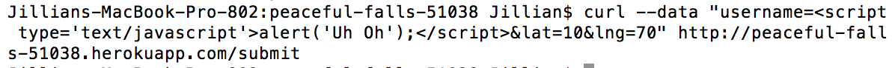
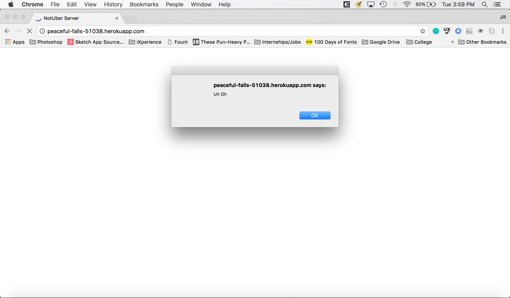
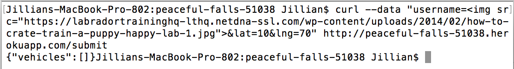
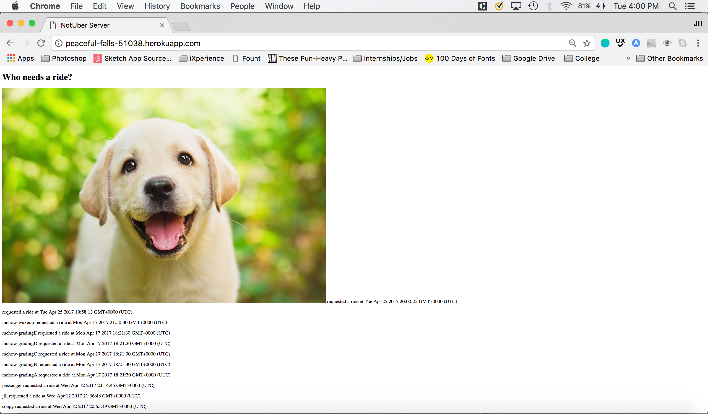
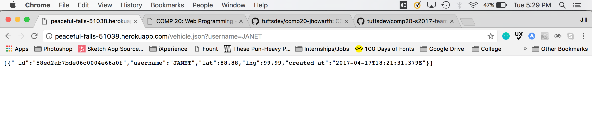
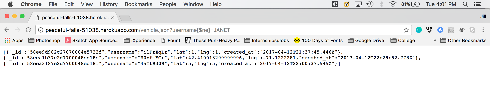

The purpose of this project was to find security and privacy vulnerabilities in the web application hosted at . The web application takes in the coordinates and usernames of vehicles and passengers and stores them in a database. The application also displays a list of all passengers and returns the data on a specific vehicle.
I began by trying some variations of tests that we learned about in class (XSS, injection, etc). Once I had done that, I moved onto reading my partner’s code and trying to find vulnerabilities. Lastly, I looked at Piazza and googled to learn more about web security and finding common vulnerabilities to give me other ideas to try.
The web application does not check or modify user input to make sure the text input is just the username and coordinates. Because of this, I was able to conduct two attacks where instead of submitting a normal passenger username, I could submit JavaScript or HTML code that causes a pop-up alert or stores an image, both of which are displayed when the index/homepage is run. Additionally, because the user input is never checked or modified, I could reverse the request in /vehicle.json to show all other vehicles in the database, instead of showing the vehicle I asked for in the request.
Issue: Cross Site Scripting
Location: The security issue is found in /submit.
Severity: High Severity - Although this specific XSS attack only caused an alert to popup when the homepage is refreshed, malicious JavaScript code could be added to the server and then run when the homepage is accessed by any user.
Description: Instead of submitting a proper username to /submit, I submitted <script type='text/javascript'>alert(‘Uh Oh’);</script>. Because the web application didn’t sanitize the data, this was passed along to the database exactly how it was. Then when the homepage was run, the line of JavaScript code was handled as simply another passenger and the alert box popped up.
Proof:

The code I ran in terminal.

The XSS attack.
Resolution: This attack could be prevented by sanitizing the input by removing special characters or by disregarding “invalid” input that contains special characters.
Issue: MongoDB Injection
Location: The security issue is found in /submit.
Severity: Medium Severity - Like the previous attack, the attack executed to exploit this vulnerability is not explicitly malicious, but other HTML code could be injected that is potentially harmful to other users.
Description: Instead of submitting a proper username to /submit, I submitted <img src="https://labradortraininghq-lthq.netdna-ssl.com/wp-content/uploads/2014/02/how-to-crate-train-a-puppy-happy-lab-1.jpg"> Again, the data was not sanitized, so the web application treated this entry as a passenger and then when the homepage was loaded, the image linked in the code showed, instead of a username.
Proof:

The code I ran in terminal.

The results of the attack.
Resolution: This attack could be prevented by sanitizing the input by removing special characters or by disregarding “invalid” input that contains special characters.
Issue: MongoDB Injection
Location: The security issue is found in /vehicle.json.
Severity: High Severity - This web application does not really contain private data (and when a passenger is submitted, an array of vehicles active in the last 5 minutes is returned anyways), so it is not a huge deal for this application, but if this same vulnerability existed on another web application (or on Uber, for example) private information like credit card numbers could be gathered.
Description: Rather than having the information returned for one user, I was able to have the information for all other users returned and displayed. I did this by using http://peaceful-falls-51038.herokuapp.com/vehicles.json?username[$ne]=JANET as the url instead of http://peaceful-falls-51038.herokuapp.com/vehicles.json?username=JANET.
Proof:

The intended output using http://peaceful-falls-51038.herokuapp.com/vehicles.json?username=JANET.

The output after the attack http://peaceful-falls-51038.herokuapp.com/vehicles.json?username[$ne]=JANET.
Resolution: This attack could be prevented by sanitizing the input by removing special characters or by disregarding “invalid” input that contains special characters. Additionally, in the GET /vehicle.json function, response.send(saved) is returned the entire array of results (which is always only one result when the application is used as it is intended), but when [$ne] is added to the application, this array is filled with all the vehicles that are not the vehicle the user put in the username. Instead, writing response.send(saved[0]) would not impact the intended functionality (and actually better follows the Assignment 3 guidelines), but it would only display one of the results if the array had more results in it, preventing the entire list of vehicles from being displayed.
The most important change I would recommend would be sanitizing user input. This was the cause of three different (and relatively dangerous attacks). While these are less important and can be exploited to a lesser degree, I would also recommend removing the console.log statements and in the GET /vehicle.json function, returning response.send(saved[0]).